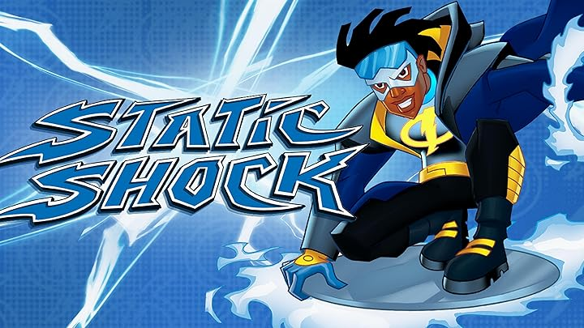

Alex Volt era um brilhante cientista de 24 anos, especializado em energias renovaveis. Trabalhando em um projeto secreto para criar uma fonte de energia limpa e ilimitada, algo deu terrivelmente errado.
Uma explosao de energia eletrica de 10 milhoes de volts atingiu Alex em cheio. Todos pensaram que ele havia morrido, mas milagrosamente, ele sobreviveu. Seu corpo havia sido transformado, dando a ele o poder de controlar eletricidade.
Apos meses treinando seus novos poderes, Alex decidiu usar suas habilidades para proteger os inocentes. Vestindo uma roupa especial que suporta sua energia, ele se tornou o Super Shock.
Seu primeiro grande feito foi impedir um assalto a banco, desarmando os criminosos usando rajadas eletricas controladas. A midia local rapidamente o apelidou de "O Heroi Eletrizante".